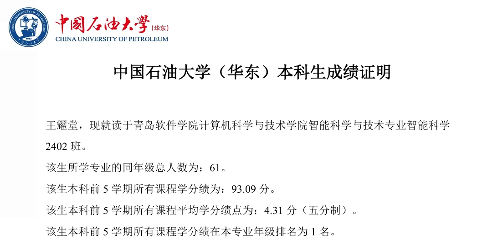
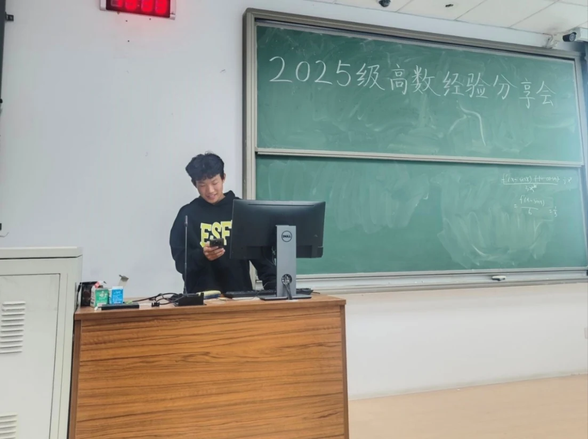

ACADEMIC
学业表现
稳定的课程基础，以及可复用的学习方法。
ACADEMIC RECORD
本科生成绩证明
中国石油大学（华东）本科生前 5 学期成绩记录。

TREND
学业成绩趋势
连续两年成绩稳步上升，大二学年每门课程分数均 90+。
93.09前 5 学期平均学分绩
4.31 / 5平均学分绩点（五分制）
SELECTED SCORES
代表课程成绩
程序设计实习100
面向对象程序设计（Java）100
算法分析与设计99
Machine Learning and Data Analysis98
计算机组成原理97
数据库原理95
毛概98
习概95
线性代数97
大学物理96
高等数学（2-2）95
高等数学（2-1）93
通用英语（2-2）91
大学物理实验91
METHOD
学习方法
- 计划与时间管理：拆解目标、规划时间
- 学习与内化：读、写、讲结合，定期回顾
- 实践应用：通过小项目检验理解
- 资源与交流：主动检索并参与讨论

高数经验分享会
将学习方法整理后分享给同学。